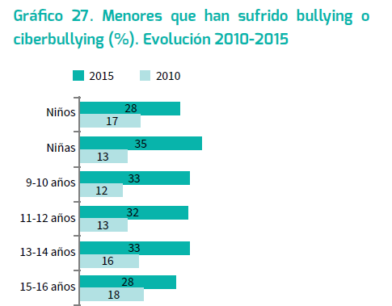

ALGUNOS DATOS Y EJEMPLOS REALES DE SITUACIONES DE RIESGO

El ciberbullying, según ha podido medir el estudio, es más probable entre las chicas (35%, frente al 29% de chicos), quienes también se ven más afectadas por ello (26%, frente al 22% de los chicos).
Sin embargo, el ciberbullying parece disminuir a partir de los 15/16 años (un 6%, frente a un 12% de la media), y también disminuye a la mitad en la adolescencia el porcentaje de menores que dice sentirse disgustado por esta experiencia.
Además del ciberbullyng, también se ha preguntado a menores de edad por otros riesgos derivados del uso de internet o del teléfono móvil como imágenes de contenido sexual (un 52 % reconoció su visión); encuentros con desconocidos contactados en la red (11 %), o el envío de mensajes sexuales o sexting (31 %).
El ciberbullying sigue siendo el fenómeno que más daño creen que causa (24%).
Y un último dato bastante ejemplificador: la edad de inicio de acceso a internet se sitúa actualmente en 7 años.
Fuente: Informe Net Children Go Mobile
Veamos algunos ejemplos de casos reales:
- Ciberbullying en niños de nueve años.
Unos niños de 4º de primaria acosaban dentro y fuera del aula a través de Whatsapp. Al tomar el centro medidas punitivas las familias de los acosadores amenazan a la dirección del centro con denuncias.
- Uno de cada cuatro casos de acoso se produce en la red.
http://www.elmundo.es/sociedad/2016/09/20/57e10015468aeb59718b4650.html
El ciberacoso está abierto las 24 horas. El 92% de las víctimas sufre algún tipo de secuela psicológica, como ansiedad, la más común, tristeza, soledad y baja autoestima.
Ademas, un 10% de las víctimas ha tenido conductas autolesivas, pensamientos suicidas e incluso intentos de acabar con su vida como forma de huir y acabar con la situación.
- Víctimas del 'sexting' con sólo 13 años: los peligros de compartir contenido sexual a través del móvil.
Si los chicos se aíslan o se vuelven agresivos, cuidado, porque pueden pertenecer al 21% de los jóvenes que han sufrido alguna vez ciberacoso.
Fijar unas normas de uso del móvil o vigilar sus aplicaciones son algunas de las pautas básicas para evitar que algo tan útil se convierta en un verdadero problema.

Convivencia Segura en la red por Antonio Martínez Ramos y Jesús Prieto González bajo licencia Creative Commons Reconocimiento-NoComercial-CompartirIgual 4.0 Internacional License.